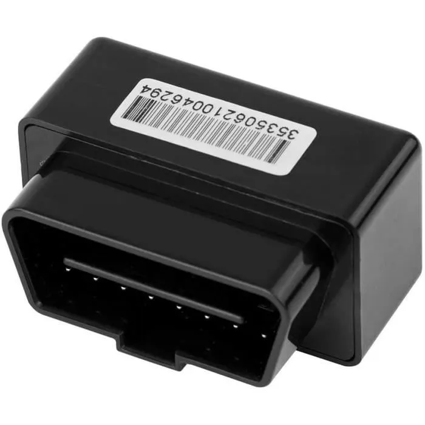

This project was the guiding thread of my internship in the company. The project was presented as follows: the company wanted to create a GPS tracker that plugs into the vehicle's OBD port (a special port in a car that allows you to retrieve information about the vehicle). However, this tracker operated with a SIM card that allowed data collected by the tracker to be sent to an application available on the user's phone. Thus, the user could view the coordinates of their vehicle, as well as see various driving statistics and much more. The project was structured as follows: a previous intern had already been able to work on the hardware part of the project, which means that she had been able to test several trackers created by different suppliers and had been able to choose a tracker supplier as well as a SIM card supplier that the company would work with.
My role was more focused on development. The company wanted, in addition to selling its tracker, to sell a subscription to the user in order to activate the SIM cards in the trackers. So, to activate the trackers, I had to develop a way to communicate with the SIM card supplier's API, with the aim of activating or deactivating the tracker's SIM card if the user purchased or cancelled their subscription. The company also wanted to be able to set parameters based on the subscription that the user had chosen (a maximum amount of data that could be sent varied depending on the chosen subscription). Once all these developments were completed, I had to implement them on the company's website so that the tracker could be sold starting from November 2022.